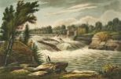

White Water Raft Co. is dedicated to providing unforgettable whitewater rafting adventures for families and thrill-seekers.

White Water Raft Co. is dedicated to providing unforgettable whitewater rafting adventures for families and thrill-seekers.
White Water Raft Co. started over 30 years ago when two friends decided to share their love of white-water rafting with others. What started as a small weekend hobby quickly grew as more people discovered the beauty and excitement to the river.
Today we run dozens of trips every year through some of the most thrilling rapids in the region. Our mission is to provide safe, unforgettable adventures for families, friends, beginners, and expert rafters alike.